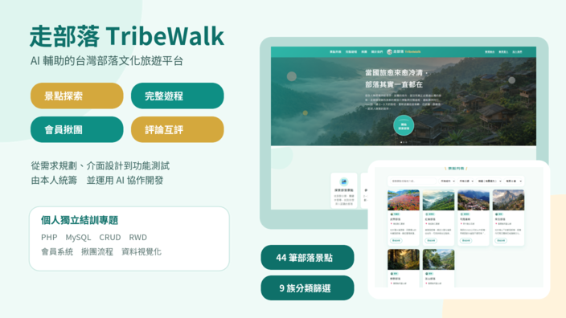

需求訪談與問題釐清
先理解使用情境、角色與真正需求，再把零散資訊整理成可執行方向。
CAREER PORTFOLIO・TAICHUNG, TAIWAN
我是 ZHENG TING FANG (Eunice)，具 5 年以上跨產業經驗，橫跨金融服務、團隊管理、教育訓練、數位行銷與網站企劃。
WHAT I BRING・我能帶來的價值
我喜歡先把問題問清楚，再整理成團隊能理解、能執行的方案。技術是工具，而我的核心價值是溝通、轉譯、陪伴與推進。
先理解使用情境、角色與真正需求，再把零散資訊整理成可執行方向。
將複雜內容轉譯成清楚的簡報與說明，協助不同背景的對象快速對焦。
具團隊帶領、內部講師與新人輔導經驗，重視使用者是否真正理解與上手。
運用 AI 拆解需求、整理文件、驗證功能與回報問題，持續協調並推動改善。
SELECTED RESULTS・量化成果
FEATURED PROJECT・代表專案
AI 輔助的臺灣原住民族部落文化旅遊平台，也是我從需求規劃、介面設計到功能驗證，獨立統籌並與 AI 協作完成的全端專題。

PROFESSIONAL EXPERIENCE・工作經歷
從金融培訓、團隊管理，到數位企劃與網站專案，每一段經歷都累積了不同的使用者視角。
儲備理財業務主管（CIA Program）
食品電商・寵物保健・制服・室內裝修・咖啡館
業務襄理／臺中國際機場保險櫃位首任主管
TOOLS & SKILLS・工具與能力
ChatGPT・Claude・Gemini・Manus
Git・GitHub・Trello・Notion・GitMind
HTML・CSS・Bootstrap・WordPress
PHP・JavaScript・Vue・Laravel
MySQL・SQLite・API
PowerPoint・Canva・Gamma・Figma・Google Analytics
CONTINUOUS LEARNING・專業培訓
勞動力發展署中彰投分署
國立臺中教育大學
中科育成中心
專業培訓
口語傳播學系（主修）・圖文傳播暨數位出版學系（輔系）
LET'S CONNECT・期待與你交流